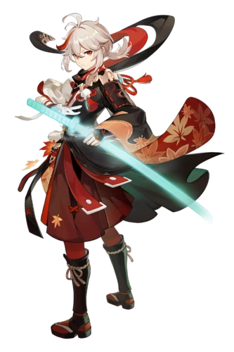
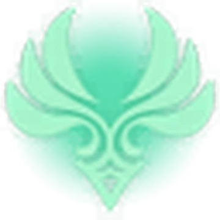
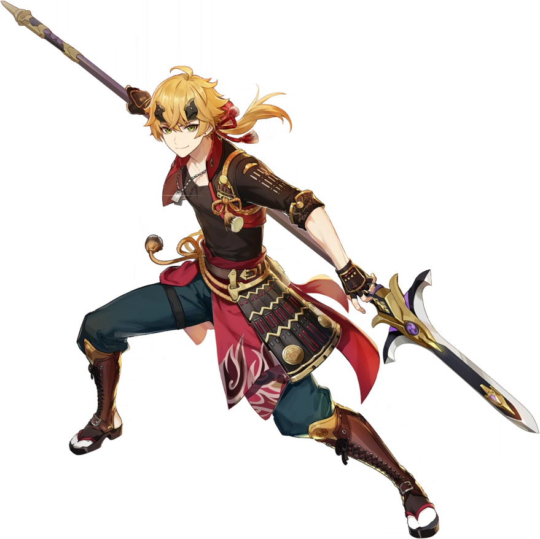
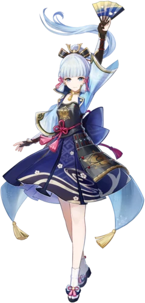
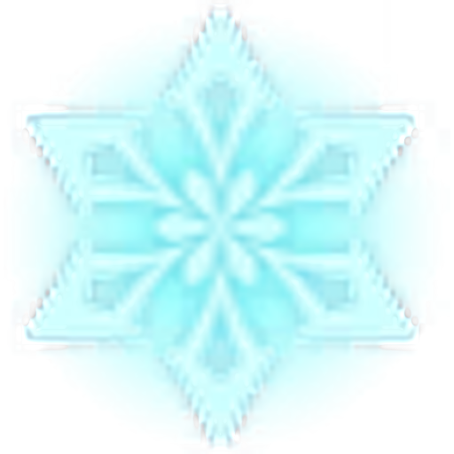

Kaedehara Kazuha
Un samurái errante del otrora famoso Clan Kaedehara, Kazuha es un miembro temporal de la tripulación de la Flota Crux Meridianam.
Elemento: 

Thoma
Proveniente de Mondstadt, es el amo de llaves del Clan Kamisato y también un conocido "reparador" en Inazuma.
.Elemento: 

Kamisato Ayaka
Debido a su estatus social como la hija menor del Clan Kamisato de la Comisión Yashiro y como la Princesa Garza, Kamisato Ayaka es vista como un modelo de perfección.
Elemento: 